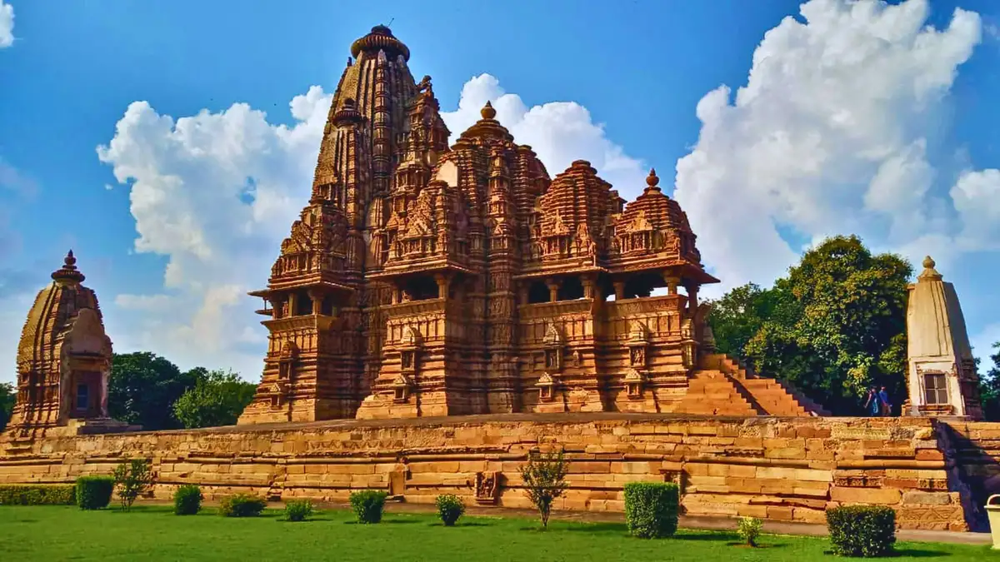

Khajuraho Monuments
- Dynasty: Chandella Dynasty
- Era: 950 – 1050 AD
- Style: Nagara with Clustered Shikharas
- Highlight: World-renowned Celestial Sculptures

Mahakaleshwar Jyotirlinga
- Location: Banks of Kshipra River, Ujjain
- Significance: One of 12 Sacred Jyotirlingas
- Orientation: Dakshinmukhi (South-facing)
- Architecture: Maratha & Bhumija Style

Omkareshwar Shrine
- Geography: Sacred 'Om' Shaped Island
- River: Narmada River Confluence
- Era: Paramara Dynasty (11th–13th Century)
- Structure: Multi-tiered stone sanctum
Comparative Architectural Data
| Temple | Location | Era | Style | Key Feature |
|---|---|---|---|---|
| Khajuraho | Chhatarpur | 10th Century | Nagara Style | Intricate stone carvings & sculptural mastery |
| Mahakaleshwar | Ujjain | Ancient / Maratha | Bhumija Style | Only south-facing Jyotirlinga shrine |
| Omkareshwar | Mandhata Island | 11th–13th Cent. | Paramara Art | Built on an island shaped like 'Om' |